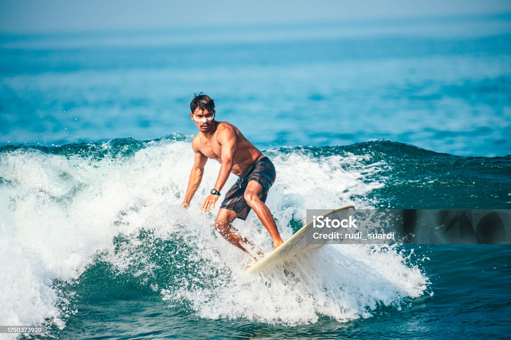

Home
Pizza
Zimtschnecken
Pfannkuchen
Ofencurry mit Hähnchen
Dubaischockolade
Dubeischockolade
Blätterteig-Apfelringe
Zimt Muffins
1 / 3

Caption Text
2 / 3
Caption Two
3 / 3
Caption Three
❮
❯
let slideIndex = 1; showSlides(slideIndex); // Next/previous controls function plusSlides(n) { showSlides(slideIndex += n); } // Thumbnail image controls function currentSlide(n) { showSlides(slideIndex = n); } function showSlides(n) { let i; let slides = document.getElementsByClassName("mySlides"); let dots = document.getElementsByClassName("dot"); if (n > slides.length) {slideIndex = 1} if (n < 1) {slideIndex = slides.length} for (i = 0; i < slides.length; i++) { slides[i].style.display = "none"; } for (i = 0; i < dots.length; i++) { dots[i].className = dots[i].className.replace(" active", ""); } slides[slideIndex-1].style.display = "block"; dots[slideIndex-1].className += " active"; }
Kochrezepte der 7a
Retzept Projekt der Klasse 7a